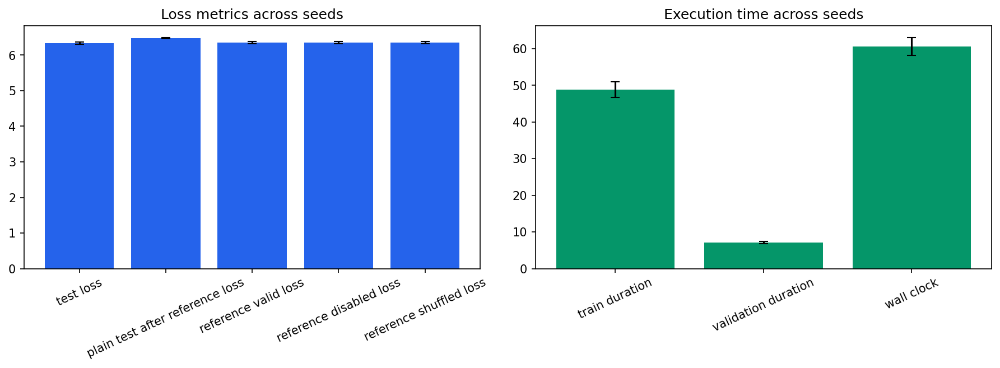

Seeds: [1, 7, 21, 42, 87]. Values are population mean +/- standard deviation.
| Test Loss | 6.33654 +/- 0.0287 |
|---|---|
| Test Perplexity | 565.072 +/- 16.1 |
| Plain Test After Reference Loss | 6.47871 +/- 0.0167 |
| Reference Valid Loss | 6.34595 +/- 0.0295 |
| Reference Disabled Loss | 6.34595 +/- 0.0295 |
| Reference Shuffled Loss | 6.34595 +/- 0.0295 |
| Train Duration Seconds | 48.7608 +/- 2.14 |
| Validation Duration Seconds | 7.1589 +/- 0.316 |
| Wall Clock Seconds | 60.6028 +/- 2.44 |
| Processed Tokens | 78610.8 +/- 78.4 |
